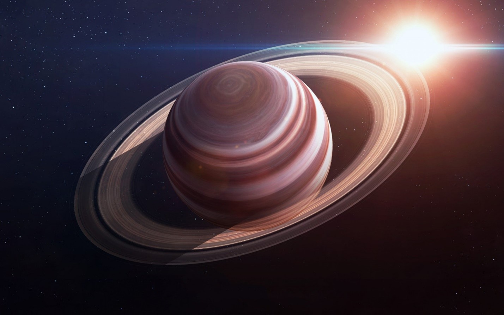

Сатурн
Сатурн по размерам меньше, чем Юпитер, но интересен своими замечательными кольцами. Их, кстати, попробовал открыть еще Галилео Галилей, но у него не получилось. В первые телескопы он увидел Сатурн в виде Чебурашки: кружок и какие-то странные ушки вокруг. Это его настолько поразило, что, будучи, человеком очень осторожным и консервативным, он не опубликовал свое открытие, но сделал некое зашифрованное сообщение.
Вернуться на главную